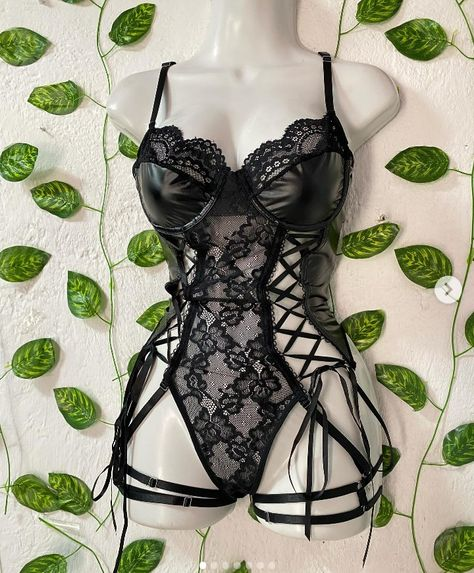
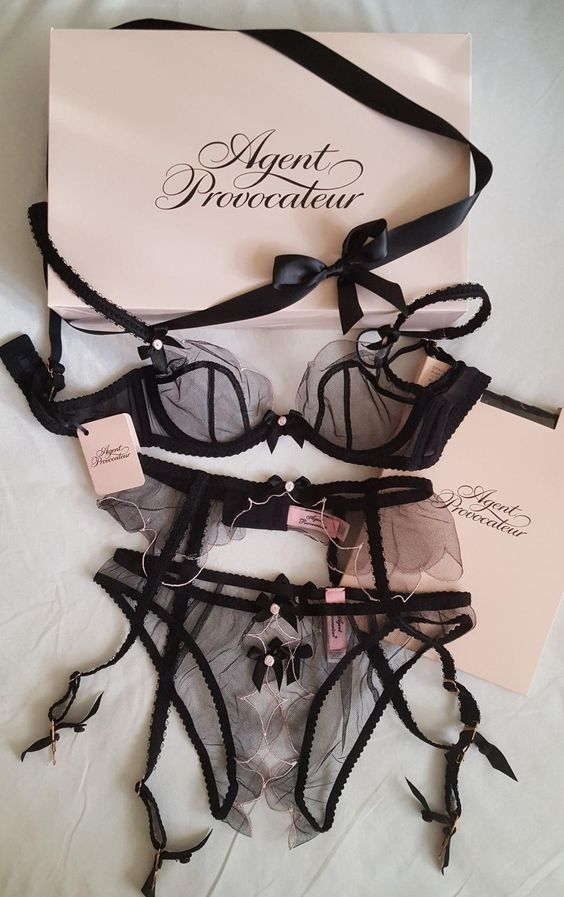

Lo Nuevo de Lencería de Dior Revoluciona el Mercado

París, 10 de junio de 2024. La icónica casa de moda francesa Dior ha lanzado su nueva colección de lencería, deslumbrando al público y a los críticos de moda por igual. Bajo la dirección creativa de Maria Grazia Chiuri, la colección ha sido presentada en un exclusivo evento en el Château de Versailles, fusionando tradición y modernidad con un enfoque en la feminidad y la comodidad.
Detalles de la Colección
La nueva línea de lencería de Dior destaca por su elegancia y sofisticación, con diseños que abarcan desde conjuntos de encaje delicado hasta prendas de seda lujosa.
Cada pieza está diseñada para resaltar la belleza natural y la confianza de la mujer, utilizando materiales de la más alta calidad y técnicas artesanales.
Maria Grazia Chiuri ha explicado que la inspiración para esta colección proviene de una combinación de elementos históricos y contemporáneos.
"Quería crear una línea de lencería que no solo fuera hermosa, sino que también empoderara a las mujeres, haciéndolas sentir seguras y cómodas en su propia piel," comentó Chiuri durante la presentación.
Innovación y Sostenibilidad
La colección también pone un fuerte énfasis en la sostenibilidad, alineándose con la creciente demanda de moda ética.
Dior ha incorporado materiales orgánicos y reciclados en sus diseños, y ha trabajado con artesanos locales para minimizar el impacto ambiental de la producción.
"Estamos comprometidos con la sostenibilidad en cada paso del proceso de diseño y producción," afirmó Pietro Beccari, CEO de Dior.
"Esta colección de lencería no solo celebra la belleza y la feminidad, sino que también refleja nuestros valores de responsabilidad y respeto por el medio ambiente."
Reacciones y Expectativas

La presentación ha recibido una respuesta entusiasta tanto de los críticos como de los consumidores.
"Lo nuevo de lencería de Dior es una combinación perfecta de lujo y conciencia ambiental," escribió la crítica de moda de Harper's Bazaar, Carine Roitfeld.
"Maria Grazia Chiuri ha elevado la lencería a un nivel completamente nuevo, ofreciendo piezas que son tanto artísticas como funcionales."
Las tiendas de Dior en todo el mundo se están preparando para un lanzamiento que se anticipa será muy exitoso, con listas de espera ya formándose para varias de las piezas más destacadas de la colección.